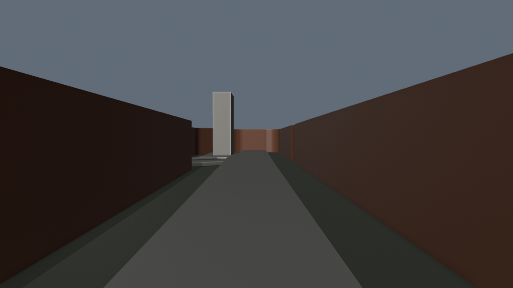
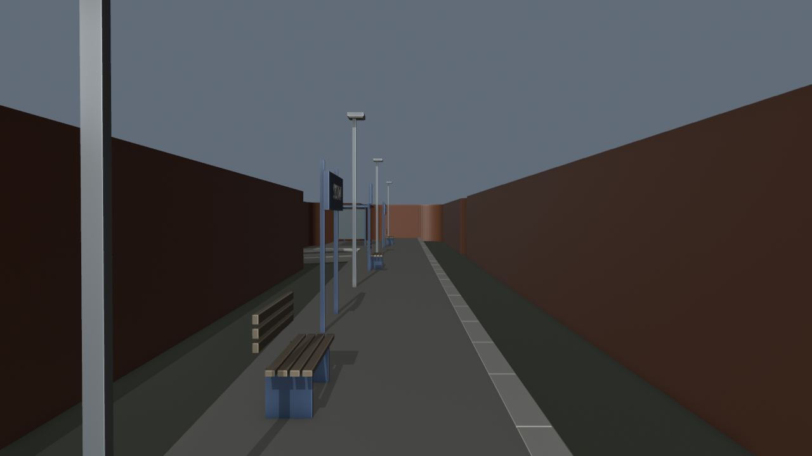
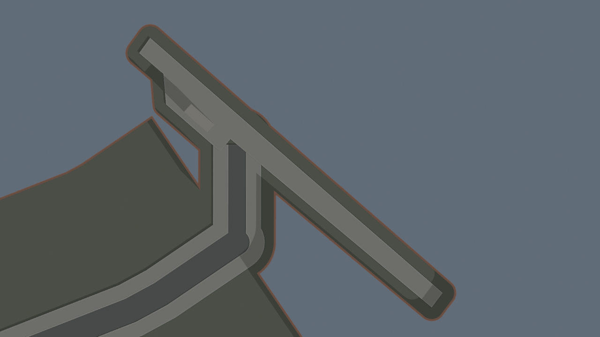
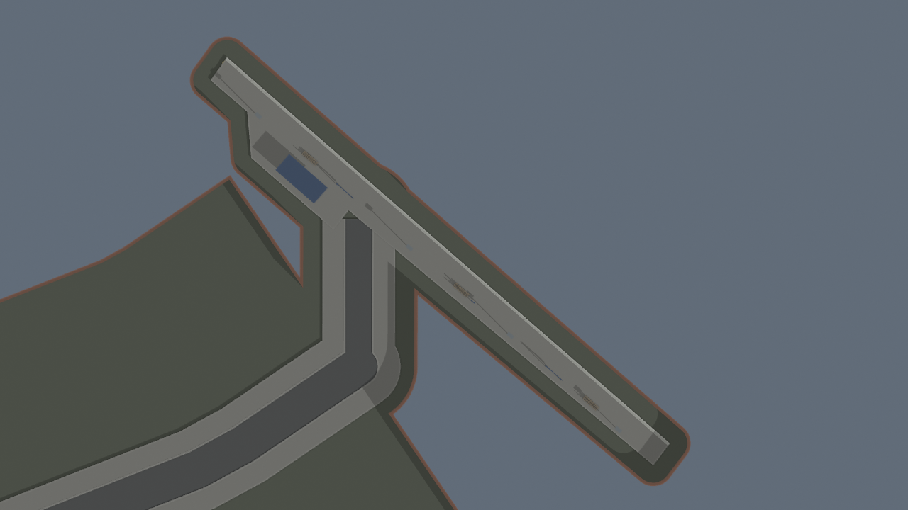

Google overhead comparison remains pending. These are model previews, not evidence of geographic fidelity. Number 29, the station ramp, car park and rail corridor remain unfinished.
Blue/metal platform furniture uses dated station photos and mapped feature tags. Shelter design, dimensions, count and exact placements are provisional. The mapped platform footprint is retained; existing roads and earlier venue work are unchanged. BO3 unchanged.
Official station layout · Nigel Thompson, 22 September 2012, CC BY-SA 2.0 · David Howard, 20 April 2025, CC BY-SA 2.0 · Map data © OpenStreetMap contributors, ODbL.




{
"geometry": {
"source": "assets/blender/pharmacie-midland-frontage-v42.blend",
"output": "assets\\blender\\pharmacie-station-detail-v43.blend",
"new_meshes": 118,
"new_text_objects": 3,
"parent_objects_preserved": 16020,
"nonmanifold_or_nonpositive": [],
"mapped_platform_way": "309564449",
"limits": [
"Google overhead verification pending.",
"Furniture positions, counts and sizes estimated.",
"Shelter is schematic, not visually verified close-up.",
"Access ramp and station car park remain unfinished.",
"No rail corridor model yet.",
"Blender static geometry only; BO3 unchanged."
],
"archived_unchanged": [
"Extension v41 | OSM footprint 1428872589"
],
"mapped_shelter_way": "1428872589",
"corrections": [
"Replaced six-metre shelter building proxy with schematic low shelter on mapped footprint",
"Moved light mast clear of sampled approach"
]
},
"route": {
"clearance_rays": 27999,
"floor_samples": 3111,
"blocked_count": 0,
"unsupported_count": 0,
"limits": [
"Not full continuous capsule collision.",
"Not all junction transitions sampled.",
"Not BO3 collision, navigation, co-op or gameplay tests."
]
}
}